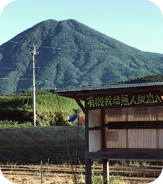

profile
宮崎県出身の福岡大学商学部経営学科3年生。
出身地とこのページデザインから幼少期から海に慣れ親しんだように思えるが、
実家は山奥で海までは車で2時間以上かかる。
得意なことはスポーツで、
全般できると自負しているものの水泳のバタフライだけはどうしてもできずスイミングを辞めている。

seminar
飛田ゼミナールに所属しながら女子校で経営についての授業をしたり、
地方での車移動の利便性を高めることを目的としたプロジェクトに取り組む。

skills
特別際立ったスキルは持ち合わせておらず、
英検2級、漢検2級、TOEIC610ほど。
その他のスキルは、田植え、芝刈り、タケノコを見つけるなどの
田舎で身に付けた現代にほとんど必要のないものばかり。